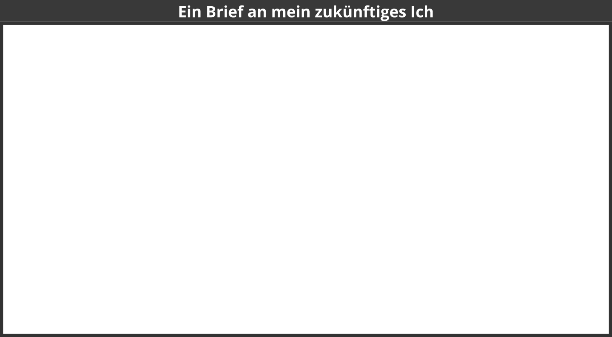

Die Kunst des lebenslangen, selbstgesteuerten Lernens
Version 1.4 (16.09.2019)
Das Verb “lernos” ist die Zukunftsform von “lernen” auf Esperanto (mi lernos = ich werde lernen, ni lernos = wir werden lernen). lernOS ist ein Betriebssystem für Lebenslanges Lernen und Lernende Organisationen. lernOS ist aber keine Software, sondern “Brainware”. Es ist eine Art zu Denken und zu Handeln, um als Einzelperson, Team oder Organisation im 21. Jahrhundert erfolgreich zu sein. Das groß geschriebene “OS” im Namen unterstreicht die Bedeutung der Digitalisierung für unsere vernetzte Wissensgesellschaft.
Zu lernOS gibt es drei grundlegende Leitfäden beschrieben, die den Ansatz auf individueller Ebene (lernOS für Dich), auf Ebene von Teams (lernOS für Teams) und auf Ebene von Organisationen (lernOS für Organisationen) beschreiben. Zusätzlich gibt es die lernOS Toolbox, die oft genutzte Methoden und Werkzeuge erklären (z.B. Podcast, Barcamp, Sketchnoting, Expert Debriefing). lernOS ist nicht auf der sprichwörtlichen grünen Wiese entstanden, sondern ist eine Zusammenstellung von bereits bestehenden und bewährten Methoden. Alle lernOS Leitfäden sind unter der offenen Lizenz Creative Commons Attribution (CC BY) auf der lernOS Webseite verfügbar und können gerne an die eigenen Bedürfnisse angepasst werden.
Wenn du weitere Fragen bezüglich lernOS hast, oder Unterstützung von Gleichgesinnten brauchst, kannst du die Community-Plattform CONNECT nutzen oder mit #lernOS auf Twitter schreiben. Beachte: Die Meisterschaft von lernOS ist eine Frage von Monaten oder Jahren, nicht Stunden oder Tagen. Also: Keep Calm & Learn On!
Dein @simondueckert
lernOS ist von vielen Personen und Quellen inspiriert und steht daher auf den Schultern von Riesen. Ein Überblick über die Wurzeln und Inspirationen habe ich im lernOS Wiki zusammengestellt. Für diesen Leitfaden möchte ich besonders danken:
Wir stehen vor enormen Herausforderungen, die durch Globalisierung, Digitalisierung sowie schnelle technologische und wissenschaftliche Entwicklung angetrieben werden. Gleichzeitig bieten uns diese Veränderungen viele neue Entwicklungsmöglichkeiten. Die Zukunft ist ungewiss und wir können Sie nicht vorhersagen. Wir müssen also offen und bereit dafür sein und sie gemeinsam gestalten (Quelle: Learning Framework 2030). Um durch die sogenannte VUCA-Welt des 21. Jahrhunderts voller Volatilität, Unsicherheit, Komplexität und Mehrdeutigkeit zu navigieren, müssen sich Teenager, Studenten, Fachleute, Manager und Führungskräfte ständig weiterentwickeln. Jeder muss Fähigkeiten wie Kreativität, kritisches Denken, Kommunikation und Kollaboration erlernen. Digital Literacy ist die Kompetenz, mit Hilfe digitaler Tools lesen und schreiben, sowie an gemeinsamen Aktivitäten teilhaben zu können. Sie wichtig, um digitale Werkzeuge produktiv einsetzen zu können. Die Motivation für die persönliche Entwicklung sollte dabei mehr sein, als einen gut bezahlten Job zu bekommen oder Profit zu machen. Jeder sollte sich um das eigene Wohlergehen, aber auch das Wohl seiner Freunde und Familie, seiner Communities und der Gesellschaft kümmern. Wir müssen lernen, welches Wissen, Fähigkeiten, Denkweisen, Einstellungen, Werte, Methoden und Werkzeuge wir brauchen, um gemeinsam eine bessere Zukunft zu gestalten.
lernOS kann Dir helfen, Dich fit für das 21. Jahrhundert zu machen. lernOS hilft Dir, Deine Aktivitäten zu organisieren und bewusst aus jeder Aktion zu lernen. Es fördert außerdem die Vernetzung mit anderen Menschen, damit Du nicht jedes Rad neu erfinden und jeden Fehler wiederholen musst.
Und das Beste ist: lernOS ist frei, offen und leicht zu verstehen. Starte heute damit!
lernOS wird in Zeiträumen von 13 Wochen, die Learning Sprints genannt werden, praktiziert. Normalerweise laufen die Sprints jeweils in einem Quartal des Jahres. Der Rhythmus kann bei Bedarf angepasst werden. Die Woche 0 wird für die Planung des Sprints genutzt. Von Woche 1-11 schlägt ein Lernpfad Übungen vor, um neue Fähigkeiten und eine neue Haltung zu erlernen. In Woche 12 wird eine Retrospektive durchgeführt, um das Gelernte zu reflektieren.
Das passiert in einem Learning Sprint:
Die Beherrschung der VUCA-Welt des 21. Jahrhunderts erfordert Offenheit für Veränderungen und neue Ansätze. Es gibt eine Menge von Werkzeugen und Methoden. Aber wenn Du nicht offen bist, sie auszuprobieren, zu experimentieren und zu scheitern, wird der Erfolg ausbleiben. Wie die Leute mit den “quadratischen Rädern” im Bild unten sind wir oft zu beschäftigt, um die neuen Chancen zu sehen.

Bei der Anwendung neuer Handlungsweisen im Privatleben, in der Schule oder in der Arbeit geht es nicht nur um die Verwendung digitaler Tools. Um von “quadratischen Rädern” auf “runde Räder” umzusteigen, musst Du auch Deine Einstellung, Deine Werte und Deine Fähigkeiten in die Überlegungen einbeziehen. lernOS nennt diese drei Dimensionen Mindset, Skillset und Toolset. Sich nur auf einige Dimensionen zu konzentrieren, kann schon helfen. Doch für die besten Ergebnisse sollten alle drei Dimensionen im persönlichen Entwicklungsprozess berücksichtigt werden.

Das Mindset kann als die Einstellung und die Werte beschrieben werden, die zu Handlungen und sichtbaren Ergebnissen führen. Diese Werte entwickeln sich im Laufe der Zeit und bilden die Kultur von Organisationen und der Gesellschaft. Wenn wir in der Welt handeln, bekommen wir Feedback und lernen daraus. Im Laufe der Zeit erzeugen wir mentale Modelle der Welt und Werte, die unser zukünftiges Handeln leiten (Boisot, 2004). Für den Erfolg in der VUCA-Welt sind diese fünf Werte besonders wichtig (Buhse 2014 & Petry, 2014):
Es gibt keine Reihenfolge in den oben genannten Werten, aber für mich persönlich ist die Offenheit der zentrale Wert für das Mindset des 21. Jahrhunderts. Damit ist die Offenheit für neue Erfahrungen, Wissen und Ideen, aber auch das offene Teilen von Wissen, Ideen und Inhalten gemeint (s.a. Definition von Offen). Du solltest im Lauf der Zeit ein “Open First Mindset” entwickeln, wie im Open First Manifest beschrieben:
ProTip: Dein Mindset ist nicht in den sprichwörtlichen Stein gemeißelt, es kann mit der Zeit verändern. Schaue Dir das Video Developing a Growth Mindset von Carol Dweck an, um mehr darüber zu erfahren.
Seit den 1980er Jahren sind Fähigkeiten wie das Lösen von Problemen und der Austausch mit anderen für den eigenen Erfolg am wichtigsten. Dazu gehören insbesondere Fähigkeiten, die in Zukunft nicht einfach durch Automatisierung und künstliche Intelligenz ersetzt werden können. Um fit für das 21. Jahrhundert zu werden, solltest Du folgende fünf Fähigkeitsbereiche trainieren (Framework for 21st Century Learning, DigiComp 2.1 Framework):

Du kannst die folgende Tabelle für eine Selbsteinschätzung am Anfang eines Learning Sprints nutzen. Wir nutzen die Stufen 1-5 aus dem Dreyfus Model of Skill Acquisition (1 = Novize, 2 = Fortgeschrittener Anfänger, 3 = Kompetent, 4 = Profi, 5 = Experte). Trage deine aktuelle Stufe in die Spalte “Ist” und deine angestrebte Stufe in die Spalte “Soll”. Auf der Basis kannst du den Fokus für deine Lernaktivitäten bestimmen.
| Fähigkeit | Ist | Soll |
|---|---|---|
| Kreativität & Innovation | ||
| Kreativ denken | ||
| Kreativ mit anderen arbeiten | ||
| Innovationen umsetzen | ||
| Kritisches Denken & Problemlösen | ||
| Ermittlung von Bedürfnissen und technologischen Möglichkeiten | ||
| Dingen effektiv auf den Grund gehen | ||
| Urteile und Entscheidungen treffen | ||
| Technische und nicht-technische Probleme lösen | ||
| Kreativ Technologien zur Lösung von Problemen einsetzen | ||
| Kommunikation | ||
| Gedanken und Ideen klar und effektiv artikulieren | ||
| Effektiv zuhören und Bedeutung erkennen | ||
| Kommunikation nutzen, um zu informieren, zu unterrichten, zu motivieren und zu überzeugen | ||
| Vielfältige Medien und Technologien nutzen | ||
| Effektiv in verschiedenen Umgebungen kommunizieren | ||
| Kollaboration | ||
| Effektiv und respektvoll in gemischten Teams arbeiten | ||
| Flexibilität und Bereitschaft zeigen sowie bei notwendigen Kompromissen unterstützen, um ein gemeinsames Ziel zu erreichen | ||
| Verantwortung für die gemeinsame Arbeit übernehmen und einzelne Beiträge wertschätzen | ||
| Mit digitalen Medien interagieren, sich beteiligen, austauschen und zusammenarbeiten | ||
| Digitale Identität verwalten | ||
| Digital Literacy | ||
| Surfen, suchen, Daten, Informationen und digitale Inhalte filtern | ||
| Auswertung und Verwaltung von Daten, Informationen und digitalen Inhalten | ||
| Schutz digitaler Geräte und personenbezogener Daten | ||
| Entwicklung, Integration und Überarbeitung digitaler Inhalte | ||
| Umgang mit Urheberrechten und Lizenzen | ||
| Programmieren, Scripten und Kodieren |
ProTip: das Mozilla Web Literacy Framework bietet Übungen zu Digital Literacy und Fähigkeiten des 21. Jahrhunderts.
Das Web 2.0 und die sozialen Medien gibt es seit 2005. Nicht jeder muss alle digitalen Tools kennen, aber man sollte einen Überblick haben, die Prinzipien kennen und die richtigen Tools für sich auswählen. Das Conversation Prism gibt einen guten Überblick über heute verfügbare Web 2.0 Plattformen:

Für Einsteiger können 28 Kategorien und Dutzende von Tools überwältigend sein. Die folgende Liste gibt daher einen Überblick über die für lernOS wichtigsten Tools:
ProTip: Das lernOS Wiki enthält eine Linkliste zu allen genannten Tools. In Zukunft wird es dort auch Tutorials zur Nutzung der Tools.
Wenn Du lernOS nicht alleine praktizieren möchtest, kannst Du Dich in einer Gruppe von 4-5 Personen, die Learning Circle genannt wird, zusammenschließen. Ein Circle ist eine Peer Support Gruppe, in der sich die Mitglieder gegenseitig mit Feedback, Erfahrung, Wissen und Reflexion helfen. Der Circle ist ein “Kreis des Vertrauens”: was im Circle passiert, bleibt im Circle! Die Circle-Mitglieder treffen sich wöchentlich und folgen dabei einem vorgegebenen Ablauf, der den Lern- und Entwicklung sprozess strukturiert.

Einmal pro Woche trifft sich der Learning Circle. Jedes Treffen folgt einem vorgegebenen Ablauf (siehe Anhang) mit einem Check-in, Übungen (Katas siehe Anhang) und einem Check-out. Der Zeitraum für das Weekly kann an die Bedürfnisse der Circle-Mitglieder angepasst werden, vorgeschlagene Zeitraum ist Freitag zwischen 11-12 Uhr.
ProTip: Kata ist anderes Wort für Übung. Es kommt aus dem Bereich des Erlernens von Programmier-Fähigkeiten im Peer-Learning-Format. Lies mehr über dieses Format unter codekata.com.
Das Weekly kann als persönliches Treffen (face-2-face) oder virtuell stattfinden. Der Circle muss Tools für die Kommunikation und Dokumentation zwischen den Treffen definieren. Die folgenden Anwendungen haben sich in der Praxis bewährt:
Wenn du in deiner Organisation ein Enterprise Social Network (ESN) wie z.B. Jive oder Connections hast, kann das für die Unterstützung von lernOS Circles auch eine gute Option sein.
ProTip: Wählt für möglichst einfache Benutzbarkeit ein Tool, das Kommunikation und Dokumentation gleichzeitig unterstützt, z.B. Microsoft Teams. In Microsoft Teams könnt Ihr den Kanal “Allgemein” für Kommunikation, die Audio-/Video-Konferenz-Funktion für virtuelle Meetings und ein OneNote-Notizbuch zur Dokumentation nutzen.
Ein Lernpfad ist eine Zusammenstellung von Aktivitäten und Übungen, mit denen du neue Fähigkeiten und eine neue Haltung erlernst. Ein Lernpfad kann in der Regel innerhalb eines lernOS Sprints durchlaufen werden. Für lernOS Einsteiger*innen (newbies oder noobs) schlagen ich vor, einen oder mehrere Learning Sprints zu verwenden, um mit den Grundlagen von lernOS vertraut zu werden. Aktuell sind dafür folgende Lernpfade verfügbar:
Als einzelner lernOS Anwender oder lernOS Circle könnt ihr entscheiden, mit welchem Lernpfad ihr beginnt und ob ihr mehr als einen Lernpfad machen wollt. Wenn du ein GTD Anwender bzw. ein OKR Anwender bist, oder schon einen WOL Circle abgeschlossen hast, kannst du einfach einen der anderen Lernpfade für den Start wählen.
Gestalte deine Zukunft durch Reflexion von Gegenwart und Vergangenheit und den Entwurf einer persönlichen Vision (30 Minuten)
Diese Kata basiert auf der Methode The Future, Backwards von Dave Snowden. Mit der Kata erhält man eine gute Sicht auf die persönliche Gesamtsituation durch einen Blick in die Vergangenheit und auf mögliche Zukünfte. Die Perspektive der Kata kann kurzfristig (1-2 Jahre), mittelfristig (3-5 Jahre) oder langfristig (ganzes Leben) sein.
Anleitung:
ProTip: Helmut Hönsch hat ein LearningSprintBooklet erstellt, das eine Vorlage für ein Future Backwards enthält.
Ein Canvas ist eine visuelle Struktur, die für die strukturierte Bearbeitung mehrere Bereiche parallel verwendet werden kann. Auf diese Weise verwendet man einen Canvas als visuelle Checkliste. Er kann aber auch für das Erzählen komplexer Geschichten verwendet werden. Die Idee kam ursprünglich von Alex Osterwalder, der den Business Model Canvas entwickelt hat. Der lernOS Canvas verwendet die gleiche Grundstruktur wie der Business Model Canvas. Doch die Benennungen der Bereiche wurden geändert, um die Arbeitsthemen von lernOS abzudecken.
Der lernOS Canvas kann von der lernOS Webseite in verschiedenen Formaten heruntergeladen (z.B. PowerPoint, PDF, PNG) werden. Um mit dem Canvas flexibel arbeiten zu können, solltest Du nie darauf schreiben. Aus diesem Grund wurden Haftnotizen erfunden!

Der obere Teil des Canvas enthält Motivations- oder Mission Statement (wenn Du eines hast) und Nummer oder Datum des Sprints. Im Bereich “Meine Ziele & Schlüsselergebnisse” werden die Ziele für den aktuellen Sprint dokumentiert. Die Bereiche “Meine Rollen”, “Meine Aktivitäten”, “Meine Projekte” und “Mein Wissen & Meine Fähigkeiten” können genutzt werden, um mögliche Ziele zu identifizieren. Die Bereiche “Meine Beziehungen” und “Meine Sozialen Netzwerke” werden zur Identifikation von Personen verwendet, die bei der Zielerreichung unterstützen können. Vorhandene Ressourcen (z.B. Dokumente, Checklisten, Videos etc.) werden in “Meine WissensWerte” aufgeführt. Die bei “Meine Ablageorte” aufgeführten Ablagen werden genutzt, um wertvolle Ressourcen großzügig mit dem Netzwerk zu teilen.
ProTip: Wenn Du das lernOS OneNote Circle Template verwendest, kannst Du ein aktuelles Foto von Deinem Canvas machen und einfügen, damit die anderen Circle-Mitglieder es sehen und Feedback geben können.
Was willst Du in den nächsten zwölf Wochen erreichen? Wähle ein Ziel, das Dich wirklich, wirklich wichtig ist und bei dem Du im Sprint Fortschritte machen kannst. Du wirst die die OKR-Methode von Google verwenden, um dieses Ziel zu definieren. Für den NOOB Pfad ist es nicht erste Priorität, das Ziel zu erreichen. Im Fokus steht zu lernen, wie Du mit Hilfe eines offenen Arbeitsstils und der Entwicklung eines Netzwerks Ziele einfacher erreichst.

Übung (25 Minuten):
Wähle ein Ziel für die nächsten 12 Wochen. Verwende die Fragen “Ist es mir wirklich, wirklich wichtig?”, “Kann ich es in 12 Wochen erreichen?”, und “Kann mein Netzwerk helfen?”, um zu testen, ob das Ziel für den Sprint geeignet ist. Wenn Du Probleme hast, ein gutes Ziel zu finden, denke an Ziele zu Deine Rollen, Aktivitäten oder Projekten. Wenn Du dazu beitragen möchstes, die Welt zu einem besseren Ort zu machen, kannst Du Dir auch ein Ziel wählen aus dem Bereich der 17 Ziele für nachhaltige Entwicklung der Vereinten Nationen wählen.
Verwende die Methode Objective & Key Results (OKR), um Dein Ziel genauer zu beschreiben. Schreibe unten Dein Ziel auf. Definiere 2-4 Schlüsselergebnisse pro Ziel, um Dir bei der Fortschrittkontrolle zu helfen. Du solltest die Schlüsselergebnisse auf einer Skala von 0,0-1,0 messen können. Um sich ehrgeizige Ziele zu setzen, gilt eine Fertigstellungsrate von 0,7 als Erfolg.
Ich will (Ziel): ...
gemessen an (Schlüsselergebnisse):
Teile Deine Ziele im Circle (10 Minuten).
Weitere Informationen:
Die meisten unserer Aufgaben haben andere schon früher erledigt. Die meisten unserer Fehler, sind schon in der Vergangenheit gemacht worden. Du kannst Zugang zu diesem Wissen und diesen Erfahrungen erhalten, indem Du mit erfahrenen Menschen in Kontakt trittst. Starke Beziehungen basieren auf Vertrauen, Teilen und Fürsorge. Dale Carnegie sagte: “Sie können mehr Freunde in zwei Monaten gewinnen, indem Sie sich für andere Menschen interessen, als wenn Sie zwei Jahre versuchen, andere Menschen für sich zu interessieren”. Wie kommst Du also mit Menschen in Kontakt, die mit Deinen Zielen in Verbindung stehen und wie kannst Du eine Beziehung mit ihnen aufbauen?
Übung (20 Minuten):
Erstelle eine Liste von mindestens zehn Personen, die mit Deinen Zielen in Zusammenhang stehen. Wenn Du die Leute nicht namentlich kennst, kannst Du auch Rollen oder Beschreibungen auf die Liste setzen (z.b. “Bester WoW-Spieler in der Stadt”, “Ein guter Kameramann”, “Besitzer der Firma XY”). Nutze Deine Kontaktlisten oder soziale Netzwerke, um mehr Personen zu finden:
Teile Deine Liste im Circle und helft Euch gegenseitig, sie zu vervollständigen (10 Minuten).
Weitere Informationen:
Sharing is caring! In der digitalen Welt wird das Teilen oft als Bereitstellen von Dateien oder digitalen Inhalten gesehen. Aber es geht auch viel einfacher: teile Deine Aufmerksamkeit mit einer anderen Person, z.B. indem Du ihr folgst, ihre Inhalt “likest” oder Dir ihre Website abonnierst. Indem Du Aufmerksamkeit teilst, vertiefst Du Deine Beziehungen mit jedem Beitrag, den Du machst.
Übung (40 Minuten):
Suche nach einer Online-Präsenz für jede Person in Deiner Beziehungsliste (z.b. Website, Blog, Profil im sozialen Netzwerk). Suche nach Möglichkeiten, Aufmerksamkeit zu teilen. Das kann ein Follow-Button, ein Like-Button, ein Abonnement-Button, eine 5-Sterne-Bewertung, ein Kommentarfeld oder ein Kontaktformular sein. Mache mindestens fünf Erfahrungen, Aufmerksamkeit zu teilen:
Besprecht Eure Erfahrungen im Circle (20 Minuten).
Nimmst Du Dir ausreichend Zeit für Deine persönliche Entwicklung und für die Arbeit an Deinen Zielen? Viele Menschen sind mit ihren täglichen Aufgaben beschäftigt und kümmern sich nicht genug um Ihre Entwicklung und Ihr Wohlbefinden. Ein guter Ansatz ist es, einen Termin mit sich selbst zu vereinbaren und sich diese Zeit im Kalender zu reservieren.
Übung (15 Minuten):
Überprüfe Deinen Kalender und suche nach möglichen Terminen mit Dir selbst. Eine Stunde oder sogar 30 Minuten pro Woche ist ein guter Ausgangspunkt. Trage Dir einen Termin mit Dir selbst in den Kalender ein. Mache ihn nach Möglichkeit zu einem wiederkehrenden Termin, damit diese Zeit für Dich zur Gewohnheit wird. Finde mindestens fünf Termine:
Besprecht Eure Ansätze im Circle.
Was sehen Menschen, die Dich im Netz suchen? Bekommen sie eine Vorstellung davon, wer Du bist und wie sie Dir bei Deinen Zielen helfen können? Du kannst diese Situation simulieren, indem Du Dich selbst googelst (oft als egosurfing, egosearch oder vanity search bezeichnet).

Übung (10 Minuten):
Öffne eine Suchmaschine im Netz und gebe Deinen Namen ein. Öffne mindestens die ersten zehn Suchergebnisse und prüfe, ob Deine Persönlichkeit und die Fakten über Dich auf dem neuesten Stand sind. Identifiziere mögliche Verbesserungsmaßnahmen:
Denke darüber nach, was Dein zentrales Online-Profil sein könnte (z.B. LinkedIn-Profil, about.me-Profil oder Profil im Enterprise Social Network). Dieses Profil wird im Folgenden Dein “digitaler Zwilling” genannt. Der digitale Zwilling repräsentiert Dich im Netz:
Mein zentrales Online-Profil (Digital Twin) ist …
Weitere Informationen:
Welche interessanten Fakten über Dich können Dir helfen, Dich mit anderen Menschen zu vernetzen? Wenn Du Dich für ein Studium an der Fuqua Business School bewerben willst, musst Du einen Aufsatz mit einer Liste von 25 zufälligen Dingen über Dich selbst schreiben, damit das Bewerbungsteam Dich besser kennenlernt. Wenn Du die Fakten über dich selbst aufschreibst, sammele Informationen, die Dir helfen könnten, neue Beziehungen zu knüpfen, die auf ähnlichen Interessen und Hintergründen basieren (z.B. “Wir haben vor 20 Jahren am gleichen Ort studiert!”). Fakten über Dich selbst sind beispielsweise:
Übung (25 Minuten):
Erstelle eine Liste von zehn Fakten über Dich selbst. Dann lies die “Fuqua 25 random things do’s and dont’s” und erweitere Deine Liste auf 25 Fakten:
Teile Deine Fakten über Dich im Circle (10 Minuten).
Weitere Informationen:
Was sind die wichtigsten Ressourcen im Zusammenhang mit Deinen Zielen, die Du teilen kannst? Eine Ressource kann ein Buch, ein Video, ein Link, ein Dokument, eine Checkliste, eine Präsentation etc. sein. Wenn Deine Ressourcen einfach per Link teilbar sind, kannst Du sie unkompliziert im Netzwerk zu teilen.
Übung (30 Minuten):
Wähle eines Deiner Ziele und schreibe mindestens zehn Ressourcen auf, die dafür nützlich oder interessant sind:
Stelle Deine Top 10 Liste im Circle vor und besprecht sie (10 Minuten).
Stellt Dein digitaler Zwilling Dich so dar, wie Du es möchtest? Viele Menschen melden sich in einem sozialen Netzwerk an und aktualisieren Ihr Profil nie mehr. Du solltest Dein Profil auf dem neuesten Stand halten und regelmäßig überprüfen (z.B. wiederkehrende Aufgabe alle drei Monate). Die Fakten über Dich, aktuelle Projekte und aktuelle Interessen sollten auf dem Profil sichtbar sein.
Übung (20 Minuten):
Überprüfe im Online-Profil, ob Du ein ansprechendes Bild, eine kurze Beschreibung und einen Slogan hast. Liste Verbesserungsideen auf, die Du umsetzen möchtest:
Ein “Tribe” ist laut Seth Godin eine Gruppe von Menschen, die mit einem Anführer und einer Idee verbunden ist. Anstelle von Tribe wird oft auch der Begriff “Community” oder “Community of Practice” (Praxisgemeinschaft) verwendet. Eine Gruppe braucht zwei Dinge zur Interaktion: ein gemeinsames Interesse und eine Möglichkeit zu kommunizieren. Communities brauchen Führung. Manchmal führt eine Person, manchmal mehrere. Welches sind die Communities, die mit Deinen Zielen in Zusammenhang stehen?
Übung (15 Minuten):
Suche nach Communities, die mit Deinen Zielen in Zusammenhang stehen, und finde mindestens zehn (verwende z.B. LinkedIn-Gruppen, Facebook Groups, XING Groups , Meetup.com, Reddit.com):
Sprich über die Liste im Circle und helft Euch gegenseitig beim Vervollständigen.
Nicht alle Beiträge in Deinem Netzwerk müssen zu Deinen Zielen sein. Manchmal teilt man besser etwas über sich selbst, um eine persönliche Verbindung herzustellen. Die Liste der Fakten über Dich kann helfen, interessante Querbeziehungen zu anderen Menschen zu finden. Versuche solche zu finden und verwende sie, um eine Verbindung herzustellen.
Übung (20 Minuten):
Gehe durch die Fakten über Dich und finde mindestens ein Fakt, das für eine Person auf Deiner Beziehungsliste interessant sein könnte. Schreibe eine Nachricht an diese Person und versuche, die Beziehung anhand dieses Fakts zu vertiefen:
Der Brief an Dein zukünftiges Ich ist eine klassische Methode zur Selbstmotivation. Du reflektierst Deine aktuelle Situation und gibst Deinem zukünftigen Ich einen Rat. Du schreibst den Brief, adressierst ihn an Dich selbst und öffnest ihn in der Zukunft. Mit dem Brief im Hinterkopf erhöht sich die Wahrscheinlichkeit, dass Deine Wünsche eine sich selbst erfüllende Prophezeiung werden.
Übung (35 Minuten):
Schreibe einen Brief an Dein zukünftiges Ich. Sprich darüber, wer Du jetzt bist (z.b. Zusammenfassung, Ängste, Werte, Überzeugungen, Fähigkeiten, Fertigkeiten, Ziele, Hoffnungen). Dann erläutere Deinem zukünftigen Ich die Dinge, die Du stoppen/weitermachen/anfangen möchtest. Gib ihm Ratschläge und stelle ihm Fragen. Verschließe den Brief und verwahre ihn an einem sicheren Ort oder nutze Online-Dienste wie futureme.org um ihn automatisch an Dein zukünftiges selbst zu senden:

Wenn Du den Brief mit Deinen Circle-Mitgliedern teilen möchten, lies ihn anschließend laut vor (15 Minuten).
Weitere Informationen:
Sich selbst ambitionierte Ziele (Objectives) zu stecken und greifbare Ergebnisse (Key Results) zu definieren, kann sehr motivierend sein. Viele Menschen haben eine lange Man-Müsste-Mal-Liste, gehen dieses Ziele aber nicht richtig an. Je länger die Liste, desto größer die Hürde etwas anzupacken. Google verwendet daher die einfache Methode Objectives & Key Results (OKR) bei der die Ziele der nächsten drei Monate nach folgenden Kriterien definiert werden:
Mit den folgenden Katas, kannst du OKRs für das Stecken eigener Ziele in einem Sprint erlernen. Dabei ist es egal, ob du in einer Organisation oder einem Unternehmen bist, das bereits OKR einsetzt oder ob du OKRs einfach für dich selber nutzen magst.
Lerne etwas über die Geschichte und die Grundlagen von Objectives & Key Results (OKRs).
Dauer: 60 Minuten
Die Geschicht von OKRs reicht einige Jahrzehnte zurück. 1975 nahm John Doerr bei Intel an einer Schulung teil, in der Andy Grove die Theorie von OKRs erklärte (Buch-Tipp: High Output Management). 1999 arbeitete John Doerr für das Venture Capital Unternehmen Kleiner Perkins Caufield & Byers, das gerade in das Startup Google investiert hatte. Darüber gelangte die Methode OKR zu Google. im Vorwort des Buchs Measure What Matters: OKRs: The Simple Idea that Drives 10x Growth von Doerr beschreibt Google-Gründer Larry Page die Wirkung von OKRs so:
OKRs have helped lead us to 10x growth, many times over. They’ve helped make our crazily bold mission of ‘organizing the world’s information’ perhaps even achievable. They’ve kept me and the rest of the company on time and on track when it mattered the most.
Im Folgenden habe ich einige Quellen zusammengestellt, mit denen du dich mit der Methode vertraut machen kannst. Suche dir aus folgender Liste Materialen aus und lerne die Grundlagen von OKRs kennen:
Plane Zeit und Raum für deinen OKR-Prozess ein.
Dauer: 30 Minuten
Für deine persönliche OKR-Umgebung braucht es nicht viel. Du musst dir wöchentlich Zeit für das Weekly Check-in im Kalender einplanen (z.B. Montag Morgen, 30 Minuten). Außerdem benötigst du eine Stelle, an der du deine OKRs dokumentierst. Diese Stelle kann analog (z.B. Papier, Whiteboard) oder digital (z.B. OneNote, Wiki) sein. Du musst entscheiden, ob du deine OKRs gleich beim ersten Mal öffentlich machst oder nicht. Bedenke: je kleiner der Kreis der Personen, die deine Ziele kennen, desto weniger können dir bei der Erreichung der Ziele helfen.
Lege jetzt deine OKR-Umgebung fest:
Schreibe dein Ziel (Objective) und die Schlüsselergebnisse (Key Results) für diesen Sprint im OKR-Format auf.
Dauer: 30 Minuten
In der letzten Woche hast du (hoffentlich) einiges über die Formulierung von OKRs gelernt. Jetzt kannst du das auf die Zielplanung für den laufenden Sprint anwenden. Verwende dazu die OKR-Formel von John Doer, um dein Ziel zu formulieren:
Ich will (Objective): ………. gemessen an ………. (Key Results):
Überprüfe dein Objective anhand folgender Kriterien (Quelle: Google):
Überprüfe deine Key Results anhand folgender Kriterien:
Wenn du den OKR-Lernpfad in einem lernOS Circle machst, dann diskutiert die OKRs im Circle und gebt euch gegenseitig Feedback.
Überprüfe deine OKRs für den Sprint und lege dich fest.
Dauer: 30 Minuten
Du hattest jetzt einige Nächte, um deine OKRs nochmal zu überdenken. Fühlst du dich wohl und motiviert damit? Fühlen sich die Objectives anspruchsvoll an? Siehst du eine realistische Chance die Key Results zu 60-70% erreichen zu können. Überdenke deine OKRs nochmal und lege dich für diesen lernOS Sprint fest. Dokumentiere die OKRs dann in der OKR-Umgebung, wie du sie vorab festgelegt hast.
Wenn du den OKR-Lernpfad in einem lernOS Circle machst, stellt euch die finalen OKRs gegenseitig vor und sprecht über Wege der Zielerreichung. So wird sichtbar, wie unterschiedlich die Herangehensweisen der unterschiedlichen Personen sein können.
Starte mit einem kurzen OKR Weekly Check-In in jede Woche
Dauer: 30 Minuten
Mit dem OKR Weekly Check-in kannst du dir deine Ziele und den aktuellen Stand wöchentlich vor Augen führen. Das hilft dir, deine Ziele nicht aus den Augen zu verlieren und Hindernisse frühzeitig zu erkennen und aus dem Weg zu räumen.
Den Zeitpunkt deines Check-in hast du ja bereits festgelegt und als Regeltermin im Kalender stehen. Verwende folgende Fragen für das OKR Weekly Check-in:
Verwende die kommenden vier Wochen, um das Check-in zu einer wöchentlichen Routine zu machen. In jeder Woche lernst du in kleinen Lernhäppchen von 15 Minuten zusätzliche Themen rund um OKRs kennen.
Wenn du den OKR-Lernpfad in einem lernOS Circle machst, tauscht euch aus, wie ihr eure Weeklys organisiert und welche Erfahrungen ihr mit dem Prozess macht.
Lerne einige Tools für OKRs kennen.
Dauer: 15 Minuten
David Allen beschreibt Getting Things Done (GTD) oft als “tool-agnostic”. D.h. man kann GTD unabhängig von spezieller Software oder Apps praktizieren. Ähnlich ist es mit OKRs, Papier und Bleistift reichen, trotzdem verwenen viele Praktiker digitale Werkzeuge dafür. Beschäftige dich in dieser Woche mit Beispielen von OKR-Tools und entscheide, ob du davon welche nutzen möchtest:
Wenn du den OKR-Lernpfad in einem lernOS Circle machst, tauscht euch die Erfahrungen mit euren OKR-Umgebungen und mögliche weitere Tools zum ausprobieren aus.
Verstehe den Unterschied zwischen “Scoring” und “Measuring” und entscheide dich für deinen Weg.
Dauer: 15 Minuten
Google empfiehlt für OKRs die Key Results immer auf einer Skala von 0 - 1,0 messen zu können. In seinem Beginners Guide to OKR beschreibt Felipe Castro unter der Überschrift “Forget Scoring” einige Nachteile dieses Ansatzes:
Daher empfiehlt Felipe in dem Kapitel die Key Results nicht auf der Skala von 0 - 1,0 zu “scoren”, sondern Wert-basierte Key Results zu verwenden und die einfach zu messen. Seiner Meinung nach vereinfacht das den Prozess der Definition von OKRs für einen selber und auch für Teams.
Schaue dir deine Key Results an und überlege, ob sich der Prozess für dich durch einfaches Messen statt der Bewertung auf der Skala von 0 - 1,0 vereinfachen würde. Entscheide dich für eine Vorgehensweise und passe deine Key Results ggf. an.
Wenn du den OKR-Lernpfad in einem lernOS Circle machst, tauscht euch aus, wer welchen Weg aus welchen Gründen gewählt hat. In den folgenden Wochen könnt ihr dann immer mal wieder über die Auswirkungen und Erfahrungen sprechen.
Lerne die Bedeutung von “Strech Goals” für das Stecken anspruchsvoller Ziele kennen.
Dauer: 15 Minuten
Mit Strech Goals oder Moonshot OKRs (abgeleitet von Kennedy’s Moonshot Goal 1962) werden Ziele bezeichnet, die unmöglich zu erreichen scheinen. Man kann sich z.B. mal nicht fragen “Wie werde ich um 10% besser/schneller?”, sondern “Wie werde ich um den Faktor 10 besser/schneller”. Dadurch wird man gezwungen, die eigene Komfortzone zu verlassen und über andere Praktiken, Fähigkeiten und anders Know-how nachzudenken.
Schaue dir deine Objectives an und überlege, aus welchen du Moonshot OKRs machen könntest und welche Konsequenzen das für dich hätte. Wenn du Moonshot OKRs ausprobieren möchtest, entscheide, ob du die OKRs noch für diesen oder einen folgenden Sprint anpassen möchtest.
Wenn du den OKR-Lernpfad in einem lernOS Circle machst, diskutiert eure Ideen und Einschätzungen zu Moonshot OKRs.
Wie sicher bist du dir, dass du deine OKRs erreichen wirst?
Dauer: 15 Minuten
Nach Henrik-Jan van der Pol von perdoo zeigt der OKR Confidence Level als Indikator an, wie sehr du daran glaubst, dass das OKR (noch) erreichbar ist. Henrik-Jan schlägt die drei Stufen “on-track”, “off-track” und “at-risk” vor. Die Schätzung eines OKD Confidence Levels wird auch von Christina Wodtke im Buch Introduction to OKRs vor. Sie empfiehlt eine Skala von 1-10, wobei eine 1 heisst “Es müsste ein Wunder geschehen” und eine 10 “Yeah, das schaffe ich”.
Schaue dir die beiden Quellen an und entscheide, ob du für deine OKRs auch Confidence Level schätzen möchtest. Wenn ja, überlege, wo und wann du diese in deiner Dokumentation pflegst.
Wenn du den OKR-Lernpfad in einem lernOS Circle machst, diskutiert eure Entscheidungen zu den OKR Confidence Leveln.
Lerne das Zusammenspiel von OKRs auf den Ebenen Individuum, Team und Organisation kennen.
Dauer: 30 Minuten
Wie im Video How Google sets goals: OKRs von Rick Klau gut beschrieben, werden OKRs nicht nur auf individueller Ebene, sondern auch auf Ebene von Teams, Abteilungen und der ganzen Organisation definiert. Im Gegensatz zu anderen Zielvereinbarungssystemen wie beispielsweise Management by Objectives (MbO) ist das aber kein reiner Top-Down-Prozess, sondern erfolgt sowohl Top-Down (Empfehlung John Doerr: 40%), als auch Bottom-Up (Empfehlung John Doerr: 60%).
Überlege, ob du neben deinen persönlichen OKRs die Methode auch in deinem Umfeld, wie beispielsweise deinem Team oder deiner Abteilung einsetzen kannst. Überlege dir mindestens eine Maßnahme, um zu testen, ob dein Umfeld offen für OKRs ist und wie man das dort umsetzen könnte.
Wenn du den OKR-Lernpfad in einem lernOS Circle machst, diskutiert eure Ansätze zur Verbreitung von OKRs in der Organisation und lernt voneinander.
War dein OKR Zyklus erfolgreich und welche Themen ergeben sich für den nächsen?
Dauer: 60 Minuten
In Scrum dient der Sprint Review dazu, am Ende des Sprints die Ergebnisse (Inkremente) zu prüfen (Inspect) und bei Bedarf für den nächsten Sprint anzupassen (Adapt). In Scrum ist das Review von der Sprint Retrospektive zu unterscheiden, bei der es um die Interaktion im Team und nicht die Ergebnisse geht.
Franziska Schneider von Workpath schlägt in einem Blog vor, zum Abschluss eines OKR Zyklus auch ein Review zu machen und sich dabei folgende Fragen zu stellen:
Führe jetzt ein OKR Review für den aktuellen Sprint durch und dokumentiere die Ergebnisse.
Wenn du den OKR-Lernpfad in einem lernOS Circle machst, diskutiert eure Review-Ergebnisse.
Sich selbst und seine Arbeitsweise zu organisieren und zu optimieren kann sehr motivierend sein. Viele Menschen stehen heute vor dem Problem im Hamsterrad der Tages- und Routinearbeiten zu versinken und keine Zeit für wertschöpfende Dinge zu haben, geschweigen denn sich Gedanken darüber zu machen, wohin sie sich mittel- bis langfristig entwickeln wollen.
Alle Elemente von GTD werden schon lange erfolgreich eingesetzt. David Allen hat einige dieser Methoden so zusammengestellt und kombiniert, das die Wirkung größer ist als die Summe seiner Teile.
GTD ist eine Möglichkeit sich in unserer VUCA-Welt die Freiräume zu schaffen, um uns fit für die Zukunft zu machen.
Die Herausforderung: Man muss das Buch eigentlich schon gelesen haben, um es wirklich zu verstehen.
Die Lösung: Durch das etappenweise Aneignen der Regeln und Prinzipien, sowie dessen Einübung (KATA) innerhalb der nächsten 12 Wochen verstehst Du den übergeordneten Gesamtzusammenhang und baust Dir nach und nach Dein individuelles GTD-System auf.
Dauer: 2-3 Stunden je nach Lesegeschwindigkeit, Lesetiefe und vorhandenen / fehlenden Materialien
Kategorie: Grundlagen
Schwierigkeits-Level: Beginner
Die Grundlagen von GTD sind an vielen Stellen im Internet & in der Literatur dokumentier. Mach dich in dieser Woche mit den Grundlagen von GTD vertraut und schaffst Dir ein Umfeld, welches Dich in eine optimale Situation versetzt. Dieses Umfeld basiert auf den drei Säulen Zeit, Ort und Werkzeug. Die Säule Zeit behandeln wir später.
ProTip:
Dauer: 1-2 Stunden je nach Lesegeschwindigkeit & Anzahl “loser Enden” im Kopf
Kategorie: Grundlagen
Schwierigkeits-Level: Beginner
Wahrscheinlich trägst Du eine Menge von Dingen in Deinem Kopf mit Dir herum, und laufend kommen neuen hinzu. Diese ganzen losen Enden belasten Deine Fähigkeit Dich zu fokussieren und die Dinge fertig zu bringen. Die Folgende Übung hilft Dir Deinen Kopf davon zu befreien, ohne das etwas in Vergessenheit gerät.
Bei dieser Übung zählt die Masse. Höre erst auf, wenn nichts mehr kommt.
Dauer: 1 - 1,5 Stunden je nach Lesegeschwindigkeit und Anzahl an Kleinzeugs
Kategorie: Grundlagen
Schwierigkeits-Level: Beginner
In dieser Woche verarbeitest Du Deinen Eingang und wendest konsequent die 2-Minuten Regel (Alles was in weniger als 2 Minuten zu erledigen ist, wird sofort erledigt) an. Du wendest die Regel sowohl bei der Durcharbeit Deines Eingangskorbs, als auch
Lies in David Allens Buch “Wie ich die Dinge geregelt kriege” das Kapitel 6
Nimm Dir täglich 10-15 Minuten für “Kleinzeugs”
Arbeite fokussiert alles ab z. B. Antwortmails, Terminannahmen, Tweets, Likes, Feedback, Rückrufe, usw.
Unwichtiges wird gleich entsorgt (TimeTimer hilft beim Timeboxing)
Dauer: 1-2 Stunden je nach Lesegeschwindigkeit und Vertiefungsdrang
Kategorie: Grundlagen
Schwierigkeits-Level: Beginner
Beim organisieren Deiner Aufgaben mit GTD hast Du den größten Individualitätsgrad. Hier kannst Du eine ganze Menge organisieren, aber auch schon ein Mindestset an Listen & Kontexten wird Dich sehr stark unterstützen den Überblick zu behalten.
Egal, mit welchem Subset von Listen und Kontexten Du arbeitest, es wird Dir helfen die Übersicht zu behalten.
Ein Beispiel: Du pendelst regelmäßig mit der Bahn zur Arbeit und zurück? Dann kannst Du ganz einfach alle Deine Aufgaben nach den Kontexten @Unterwegs, @Lesen filtern und bekommst nur die angezeigt, die beim Pendeln auch Sinn machen.
ProTip: Zu Beginn ist weniger mehr. Beginne zunächst mit einigen wenigen, aber wesentlichen Dingen. In den Iterationsphasen (Ab Woche 8) kommen die Dinge die Dir noch fehlen automatisch dazu.
Kontextlisten dienen eigentlich nicht unmittelbar der Produktivität, sondern dem systematischen Aufschieben der Dinge, die wichtig aber nicht dringend sind. Aufschieben ist eine sinnvolle Taktik um wichtige Dinge später zu tun, weil man sie jetzt gerade nicht tun kann.
Dauer: 1-2 Stunden je nach Lesegeschwindigkeit und Vertiefungsdrang
Kategorie: Grundlagen
Schwierigkeits-Level: Beginner
Die Phase Durchsehen in GTD hat einen etwas anderen Charakter als die Vorgängerphasen. Sie dient hauptsächlich dazu, das Dein System in Takt bleibt und ist damit das Herzstück des Systems. Du wirst Dich nur auf Dein System verlassen können, wenn Du diese Phase regelmäßig & zeitnah durchläufts
Neben regelmäßigen kurzen Durchsichten Deines Systems bildet der Wochenrückblick das Kernstück dieser Phase.
ProTip: Um den Wochenrückblick so angenehm wie möglich zu machen, verbinde Ihn mit Dingen die Dir angenehm sind und Spaß machen. Z.B. Dein Lieblingsgetränk, Lieblingsort, Lieblingsmusik oder Deine Lieblingsuhrzeit.
Eine Besonderheit für Dich ist, dass Du mit Deinen aktuellen lernOS Circlern das gleiche Ziel verfolgst. Suche Dir einen Partner, denn gemeinsam geht vieles viel einfachen.
Dauer: 2-4 Stunden je nach Lesegeschwindigkeit Arbeitsaufkommen
Kategorie: Grundlagen
Schwierigkeits-Level: Beginner
In dieser Phase wählen wir aus, was zu erledigen ist. Zwei Grundprinzipien werden Dich dabei unterstützen. Eine Dritte lernst Du in Woche 10 kennen.
Vier Kriterien zur Erledigung von Aufgaben. Filtern der Aufgaben (Nach Kontext/Zeit/Energie/ Priorität )
Das Dreistufenmodell zur Bewertung der täglichen Arbeit. Unterteilung in die drei Arten der Arbeit (Aufgaben definieren / Vordefinierte Aufgaben / Ungeplante Aufgaben)
Lies in David Allens Buch “Wie ich die Dinge geregelt kriege” das Kapitel 9 (Ohne das 6-Stufen-Modell)
Wähle einen Tag aus, an dem Du bewusst an der Phase Erledigen arbeiten willst
Berücksichtige alle drei Arten von Arbeit für Deine Zeitplanung
Dein Tag ist geplant - Dann verschaffe Dir einen Überblick der anstehenden Aufgaben und leg los
ProTip: Dein Kalendertag sollte NIE ganz ausgeplant sein. 20% Puffer für ungeplante Aufgaben sind ein guter Richtwert
Wenn Du Termine mit anderen machst, plane diese immer 5 Minuten kürzer (z.B: 25’ anstatt 30’ oder 55’ anstatt 60’ )
Dauer: 1-3 Stunden je nach Lesegeschwindigkeit, Projektanzahl & Projektgröße
Kategorie: Grundlagen
Schwierigkeits-Level: Intermediate
Projekte haben in GTD eine eigene, enge Definition. Alles was mehr als einen Arbeitsschritt benötigt um vollendet zu werden UND innerhalb eines Jahres zu erledigen ist, wird als Projekt bezeichnet. I.d.R. sind Projekte etwas komplexere, nacheinander und/oder parallel ablaufender Aufgaben. Daher ist es wichtig sich ein Bild vom Zielzustand zu machen und das “ganze” Projekt zu Beginn einmal grob durchzugehen.
Lies in David Allens Buch “Wie ich die Dinge geregelt kriege” das Kapitel 3 &10
Schau Dir das Video “Wenn ihr nicht werdet wie die Kinder” von Dr. Joachim Schlosser an. Blog-Artikel.
Arbeite ein Neue(s) oder bestehende(s) Projekte nach diesen Regeln durch und übertrage die Ergebnisse in Dein GTD-System
Wie in zuvor versprochen, widmen wir uns der Säule Zeit an dieser Stelle. In Vorbereitung auf die folgenden Wochen planst Du bitte diese Termine & Terminserien fest in Deinem Kalender ein:
ProTip: In der Regel bestehen 80% der Projekte aus den Schritten Ergebnisse & Nächste Schritte, 15% der Projekte aus den Schritten Brainstorming & Ergebnisse & Nächste Schritte und 5% der Projekte aus den Schritte 1-5.
Dauer: 2-4 Stunden
Kategorie: Grundlagen
Schwierigkeits-Level: Intermediate
Du hast Dich in den letzten 7 Wochen intensiv mit den einzelnen 5 Phasen von GTD auseinandergesetzt. Du hast Dir alle notwendigen Materialien besorgt, Deinen Arbeitsplatz eingerichtet, Dein individuelles System aufgesetzt, Listen & Kontexte vorbereitet und den Wochenrückblick geübt und weißt, wie Du den nächsten Schritt identifizierst
Jetzt weißt Du theoretisch alles, was Du wissen musst, um den Gesamtprozess in Gang zu setzten. Jede einzelne Phase für sich ist wichtig, aber nur als geschlossener Kreislauf wird der Prozess sein ganzes Potential für Dich entfalten.
Du bist soweit! Ab dieser Woche bringen wir das Gesamtsystem zum laufen.
Arbeite in dieser Woche kontinuierlich die 5 Phasen von GTD durch.
Initial - Desk-Sweep
- Jetzt beginnst Du um Deinen Arbeitsplatz herum alles einer sehr einfachen Prüfung zu unterziehen. Nimm JEDE Ding in die Hand und stelle Die die eine Frage: Kann das weg?
- Wenn ja, entsorge es sofort, ansonsten lege es in Deinen Eingangskorb.
- Wiederhole diesen Vorgang, bis alles durch Deine Hänge gegangen ist. Mehr ist nicht zu tun.
- Tipp: Beginne lokal (am Platz) und weite Deine Suchen nach Zeug & Dingen konzentrisch weiter aus.
- Schreibtischoberfläche
- Schubladen
- Abstellflächen
- Schränke
- Fußböden & Regale
- Bis nach Hause (Falls Du das magst)
Dann die Phasen 1-5 iterativ immer wieder durchlaufen
Dauer: 2-3 Stunde je nach Lesegeschwindigkeit & Projektanzahl
Kategorie: Grundlagen
Schwierigkeits-Level: Intermediate
Nach David Allens Einschätzung ist die Frage “Was ist der nächste Schritt?” die essentielle Leitfrage um messbare Leistunsgverbesserungen zu erzeugen. Denn diese Frage erzwingt Klarheit, Zuständigkeit, Produktivität und gesteigerte Kompetenz.
Iteriere in dieser Woche wieder die 5 Phasen -> Wenn es funktioniert, mach‘ weiter so. Wenn es nicht funktioniert, passe Dein System an.
ProTip: Überlege ob Du ab jetzt auch immer bei der Anlage einer neuen Aufgabe gleich weitere Attribute mit anlegen willst. Z.B. Benötigte Zeit oder benötigte Energie. Dies hilft Dir beim Entscheiden in Phase 5 zu entscheiden, was JETZT wichtig ist.
ProTip: Formuliere Deine (Projekt)-Aufgaben möglichst immer vom Ergebnis her: “Die Auto-Inspektion ist durchgeführt”, “Der Projekt ist abgenommen”, “Der Vorstand hat X oder Y entschieden”
Dauer: 1-3 Stunde je nach Lesegeschwindigkeit & Flughöhe
Kategorie: Erweiterte Grundlagen
Schwierigkeits-Level: Advanced
Ein drittes Modell, neben den “Vier Kriteren” und den “Drei Schritten” aus der Kata “Erledigen” kann uns helfen, die eigene Arbeit noch besser zu reflektieren. Gehen wir davon aus das wir durch die konsequente Anwendung unseres GTD-Systems die Stufen 0-2 (Handlungen, Projekte und Verantwortungsbereiche) fest im Griff haben, widmen wir uns hier den Stufen 3-5 (Zukunftsfaktoren, Ausrichtungen und Absichten).
Dies sollten wir regelässig, mindestens jedoch einmal im Jahr tun.
Iteriere in dieser Woche wieder die 5 Phasen -> Wenn es funktioniert, mach‘ weiter so. Wenn es nicht funktioniert, passe Dein System an
Pro-Tip: Such Dir für diese Übung einen Ort, an dem Du durch nichts nicht gestört werden kannst.
Pro-Tip: Wähle eine Uhrzeit, in der Du noch fit im Kopf bist.
Pro-Tip: Sorge dafür, dass Du nicht gleich einen Anschlusstermin an diese Übung hast.
Pro-Tip: Der OKR-Lernpfad ist eine sehr gute Hilfe, Dich bei der Erarbeitung & Formulierung von Zielen zu unterstützen.
Dauer: 1-3 Stunde je nach Lesegeschwindigkeit & Anzahl der Ideen
Kategorie: Erweiterte Grundlagen
Schwierigkeits-Level: Advanced
Zwei der drei Stufen auf dem Weg zur Meisterschaft haben wir in den letzten 10 Wochen bereits kennengelernt und geübt. Anwendung der Grundlagen & das 6-Horizonte-Modell. Für Experten stehen nun noch Fokus, Ausrichtung & Kreativität auf dem Plan. Es geht schlicht darum, die frei gewordene Zeit zu benutzen, um die Erfahrungen unendlich zu optimieren.
Iteriere in dieser Woche wieder die 5 Phasen -> Wenn es funktioniert, mach‘ weiter so. Wenn es nicht funktioniert, passe Dein System an
ProTip: Der WOL Lernpfad ist die ideale Unterstützung Dir ein Netzwerk von Kontakten aufzubauen, die Dir dabei helfen können, Deine Ziele zu erreichen.
Dauer: 1 Stunde
Kategorie: Grundlagen
Schwierigkeits-Level: Beginner
In dieser Woche sollte das endgültige Ergebnis Deines Objectives vorliegen. Sprecht im Circle darüber und zeigt Sie Euch gegenseitig im Check-in.
Ihr werdet über die Erfahrungen im Circle nachdenken und darüber sprechen, wie Ihr den Prozess aufrecht erhalten könnt.
Nach dem Weekly solltet Ihr Euch etwas Zeit nehmen, um Euren Erfolg zu feiern
Wenn Du diesen Leitfaden gelesen hast, lernOS aber noch nicht aktiv umsetzt, solltest Du jetzt damit beginnen! Mit lernOS zu starten ist wirklich einfach. Diese fünf Schritte werden Dir beim reibungslosen Start helfen:
Keep Calm & Learn On! :-)
| Version | Bearbeitet von | Beschreibung Änderung | Datum |
|---|---|---|---|
| 1.0 | Simon Dückert | Erste Version des lernOS Leitfadens | 17.09.2018 |
| 1.0.1 | Simon Dückert | Kapitel Danksagung hinzugefügt | 17.09.2018 |
| 1.1 | Simon Dückert | OKRs as default method for learning sprints, introduction noob path with reduced kata set, renaming of lernOS Sprint/Circle, Introduction of learning paths | 17.12.2018 |
| 1.2 | Simon Dückert | Leitfaden in “lernOS Leitfaden für Dich” umbenannt, lernOS Logo in die Titelseite eingefügt, Telegram als User Group durch CONNECT ersetzt, Mobi-Version (Amazon) zu Ausgabeformaten hinzugefügt, Erzeugung aller Ausgabedateien über make.bat automatisiert, Inhaltsverzeichnis (TOC) zur HTML-Version hinzugefügt | 25.03.2019 |
| 1.3 | Simon Dückert | Neue “High Level Structure” für lernOS Guides angewendet, Reihenfolge im Grundlagen-Kapitel geändert (Sprint, Wheel, Circle), Hashtags von “ProTips” entfernt, Platzhalter für OKR und GTD Lernpfade eingefügt, Kata “Gestalte dein Future Backwards” zu Woche 0 hinzugefügt, Kata “Visuell denken mit dem lernOS Canvas” in Woche 0 verschoben, Skillset: Tabelle der Fähigkeiten für Selbsteinschätzung erweitert, Anzahl der Anwendungen zur Unterstützung von Circles auf Basis WOL Umfrage 2018 reduziert, Standardisiertes Vorwort eingefügt, Inhalt und Struktur des Kapitels Danksagungen verbessert, Standardisierte orange Rückseite eingefügt | 17.06.2019 |
| 1.4 | Simon Dückert, Alexander Rose | OKR und GTD Lernpfade eingefügt, … | 17.06.2019 |
{kind=link}